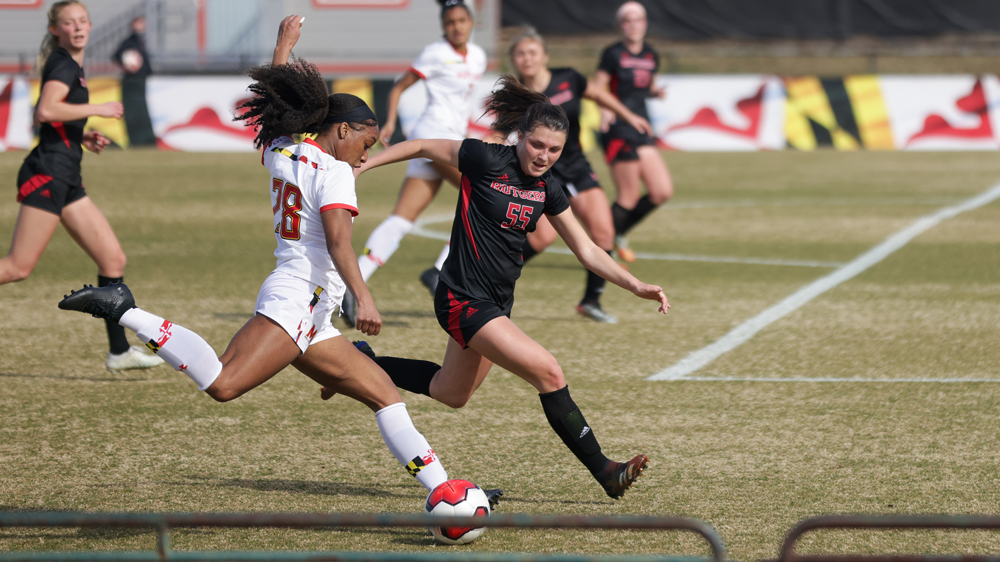
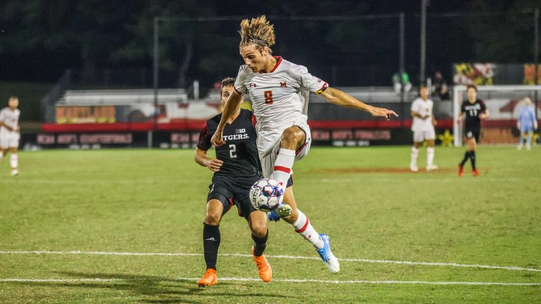

At the University of Maryland, soccer is one of the most popular sports amongst the student body. Throughout the fall semester, students flock to Ludwig Field to cheer on the Terrapins. There is even an entire student group, the UMD Crew, dedicated to supporting the soccer team, hosting tailgates, gathering in the stands and even mocking opponents to cheer on Maryland.
However, the Crew mostly supports the men’s team, just one example of how support for the men’s and women’s soccer teams is not equal at the university. The inequality in popularity for each team is further evidenced by the fact that men’s soccer home games have remarkably higher attendance than the women’s team.

The entrance to Ludgwig Field at the University of Maryland
Average Game Attendance
Over the past four years, from 2017-2021, the average game attendance for men’s soccer games was about 2,133 people. This presents a stark contrast to the average attendance at women’s games for this period, which was about 511 people. Men’s games have amassed about four times as many spectators as the women’s games have.
2021 Season
In the 2021 season, the average game attendance for women’s soccer was about 30% the size of the average attendance at the men’s games. Women’s games saw about 678 people, while the men’s saw around 2,293 people.
Each of the teams played many of the same opponents, yet their games had very different turnouts.
For instance, on Sept. 26, 742 people attended the women’s soccer team’s game against Northwestern University at home, while 2,258 people attended the men’s game against the Wildcats on Oct. 8, three timesas many spectators.
The women’s and men’s teams also both played Rutgers University. For the men’s game against the Scarlet Knights on Sept. 28, 1,461 people attended, compared to the 1,006 people who went to the women’s game on Oct. 14.
Team Performance
Despite key commonalities, such as shared opponents and even the location of games, the men’s and women’s soccer games at the university spur different reactions from the campus community.
Catherine DeRosa, a midfielder on the women’s team and a sophomore communications major, said that the contrast between how many people attend her team’s home games versus the men’s team may be attributed to each team’s success on the field.
“I think the men get more fans just based on their success and their program’s success over a ton of years and our women's program hasn't had that success yet,” DeRosa said.
The men’s team has indeed performed better than the women’s. From 2017 to 2021, the men’s soccer has won an average 57% of its home games, whereas the women have won 36% of their games. In the 2021 season, men’s soccer won nine out of their 12 home games and the women won three out of 10 home games.
In terms of championship titles, men’s soccer has also won more than the women’s team. In 1968, 2005, 2008 and 2018, the men’s team won the NCAA Division I Championship, something which the women’s team has not yet accomplished.
Tori Paul, a midfielder and sophomore kinesiology major, also said that the men’s history of winning has made it easier for it to amass more community support. “It is easier for people such as the Crew to create such a huge fan base,” she said.
Paul and DeRosa also noted that marketing and media coverage are also necessary to increase the community’s support for their team. DeRosa said she felt that the men’s team is generally marketed much more than the women’s and its relationship with the Crew further increases its popularity.
“The men have the Crew and they have tailgates before every game and they have benefits of being a part of the Crew... which you can't really get if you go to a women's game,” DeRosa said.
Source: The Diamondback
While the Crew did attend some of the women’s games in the 2021 season, both players said that its attendance at more of its games would go a long way in increasing support for their team and program. Paul also said that greater media coverage would also help spread the word about when women’s games are taking place.
Joshua Bolma, a midfielder and forward on the men’s soccer team and a freshman enrolled in Letters and Sciences, said that he has personally noticed how the world of sports naturally favors men.
“Male athletes get more attention and...just everything favors them more, I think in this specific arena, compared to females,” he said. Bolma agreed with DeRosa and Paul that the men’s record has likely contributed to its popularity, but also noted that the highly competitive nature of men’s soccer may also make their games more popular.
Source: The Diamondback
Bolma said that there is a role for the men’s team to play in increasing support for the women’s program. One way he and his teammates may do this is by attending women’s games.
“A lot of us [are] also friends with the Crew.... if we're going to the games, or even if we're not, we could at least try to invite them and talk to them and try to get them to also go and support the women’s [team]...as well as try to go to the games,” he said.
DeRosa said that the men’s and women’s team have a good relationship and that the male athletes fully support her team, which showed when they attended their games. Nonetheless, she said that improving the program’s success may be the key to increasing the women’s team’s popularity at the university.
The situation at the University of Maryland is not unique, as limited support and attention is something all female athletes may experience.
“Female athletes have always been overlooked in my opinion, so I think that's a struggle that we will forever face,” DeRosa said.